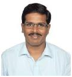
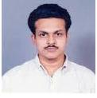
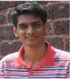
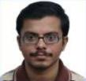

Speakers (Biography and Abstracts)
|
 |
Dr. M. Ashok Kumar (Assistant Professor, IIT - Indore)
Dr. M. Ashok Kumar completed his Ph.D from IISc, Bangalore in October 2014.
Subsequently, he was a Visiting Scientist at the Stat-Math Unit of the Indian Statistical
Institute, Bangalore from December 2014 to May 2015 and a post-doctoral fellow at the
department of Electrical Engineering of the Technion-Israel Institute of Technology from May
2015 to December 2015 under the mentorship of Prof. Igal Sason. He has been an Assistant
Professor in the Discipline of Mathematics of the Indian Institute of Technology, Indore since
January 2016. Dr. M. Ashok Kumar’s research interests are in information theory, statistics,
and probability, with special emphasis in measures of information, information geometry,
statistical inference, and robust estimation.
Insert abstract here.
|
|
 |
Dr. B. S. Manoj (Associate Professor, IIST – Trivandrum)
Dr. B. S. Manoj obtained his Ph.D degree from IIT, Madras and subsequently completed his
postdoctoral fellowship at the University of California, San Diego. Dr. B. S. Manoj works in the
area of wireless networks, computer networks, network science, graph theory, cyberphysical
systems, cyber security, and next generation internet architectures.
Insert abstract here.
|
|
 |
Dr. Lakshmi Prasad Natarajan (Assistant Professor, IIT – Hyderabad)
Dr. Lakshmi Prasad Natarajan received his Ph.D. from Department of Electronics and
Communication Engineering at IISc in 2013. He worked as a Research Fellow at Monash
University, Melbourne during 2014 to 2016. His research interests include Coding techniques
and theory for communication systems, design and analysis of explicit codes, and encoding
and decoding techniques for multi-terminal and multi-antenna communications.
Insert abstract here.
|
|
|
Dr. Lalitha Vadlamani (Assistant Professor, IIIT – Hyderabad)
Dr. Lalitha Vadlamani received her B.E. degree in Electronics and Communication Engineering
from the Osmania University, Hyderabad in 2003 and her M.E. degree from the Indian
Institute of Science (IISc), Bangalore, in 2005. She obtained her Ph.D. from Department of
Electronics and Communication Engineering at IISc. She is a recipient of Prof. I.S.N. Murthy
medal from IISc, 2005 and the TCS Research Scholarship for the year 2011. She worked as
a research intern at Micorsoft Research, Bangalore before joining as a faculty member at IIIT
Hyderabd. Her research interests include erasure-coding for distributed storage, distributed
function computation and distributed source coding.
Insert abstract here.
|
|
|
Dr. Naveen K. P. (DST-INSPIRE Fellow, IIT – Madras)
Dr. Naveen K. P. obtained his Ph.D degree from IISc, Bangalore and subsequently completed
his postdoctoral fellowship with the INFINE team at INRIA Saclay, France. Dr. Naveen K. P
works in the area of wireless networks, applying tools from stochastic processes, control
and optimization for modeling and performance analysis.
Insert abstract here.
|
|
 |
Dr. Prasad Krishnan (Assistant Professor, IIIT – Hyderabad)
Dr. Prasad Krishnan received his B.E degree in Electronics and Communication Engineering
in 2007 from the College of Engineering, Guindy, Anna University. In 2014, he completed
Ph.D degree in the Department of Electrical Communication Engineering at the Indian
Institute of Science, Bangalore. His primary research interests include network coding,
network-error correction, index coding and physical layer network coding.
Insert abstract here.
|
|